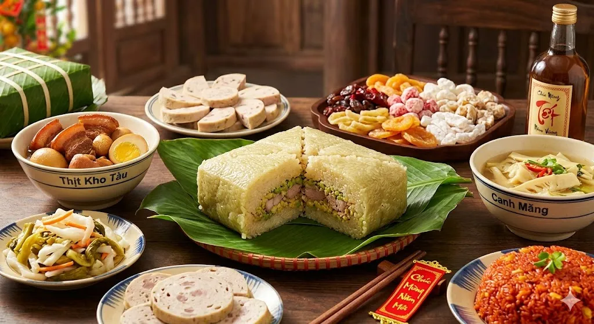
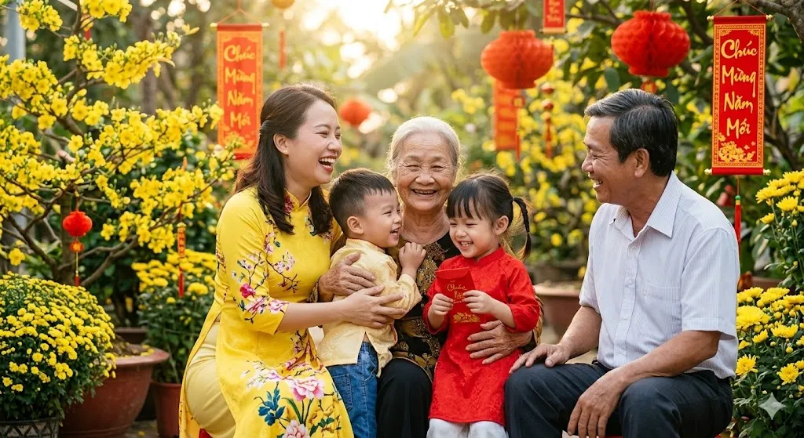

Hoa đào trước ngõ
Cười vui sáng hồng
Hoa mai trong vườn
Rung rinh cánh trắng
( Nguyễn Hồng Kiên, Tết đang vào nhà)
Mùa xuân thường mát mẻ, dễ chịu, có nắng dịu và gió thổi dịu dàng. Không khí trong lành hơn, đôi khi có mưa xuân lất phất tạo cảm giác dịu dàng, dễ chịu cho mọi người.
Cảnh quan: Cây cối đâm chồi nảy lộc, hoa nở rực rỡ khắp nơi. Màu xanh tươi mới xuất hiện nhiều hơn, làm cảnh vật trở nên sinh động và đầy sức sống.
Trang phục: Mùa xuân, miền Bắc chuộng áo dài, áo khoác mỏng, khăn choàng nhẹ vì trời còn se lạnh. Miền Trung thường mặc áo dài truyền thống, màu sắc nhã nhặn, phù hợp không khí lễ hội đầu năm. Miền Nam thời tiết ấm áp nên trang phục thoáng mát, áo dài mỏng, váy nhẹ, màu sắc tươi sáng.
Mùa xuân gắn liền với nhiều lễ hội truyền thống, đặc biệt là Tết. Mọi người đi du xuân, chúc Tết, tham gia các hoạt động văn hóa và gặp gỡ người thân, bạn bè.

Mùa xuân thường gắn với những món ăn thanh đạm, mang ý nghĩa khởi đầu mới và may mắn. Ở Việt Nam, có bánh chưng, bánh tét tượng trưng cho sự sum vầy, thịt kho trứng thể hiện sự đủ đầy, cùng các loại mứt ngọt mang ý nghĩa chúc năm mới thuận lợi. Ngoài ra, những món ăn có màu sắc tươi sáng như dưa hành, củ kiệu hay trái cây ngày Tết cũng tạo cảm giác tươi mới, hài hòa.

Mùa xuân thường mang lại cảm giác vui tươi, nhẹ nhàng và đầy hy vọng. Không khí ấm áp cùng sự thay đổi của thiên nhiên khiến con người dễ cảm thấy thoải mái, muốn bắt đầu những kế hoạch mới và dành nhiều thời gian hơn cho gia đình, bạn bè. Đây cũng là khoảng thời gian để nhìn lại năm cũ và mong chờ những điều tốt đẹp phía trước.
Hãy vẽ và để AI nhận xét bức tranh của bạn